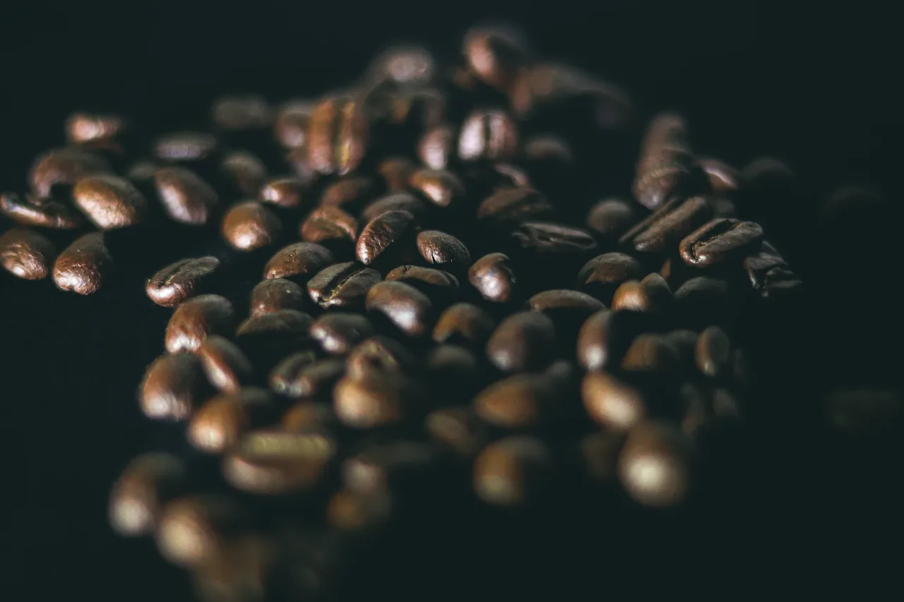
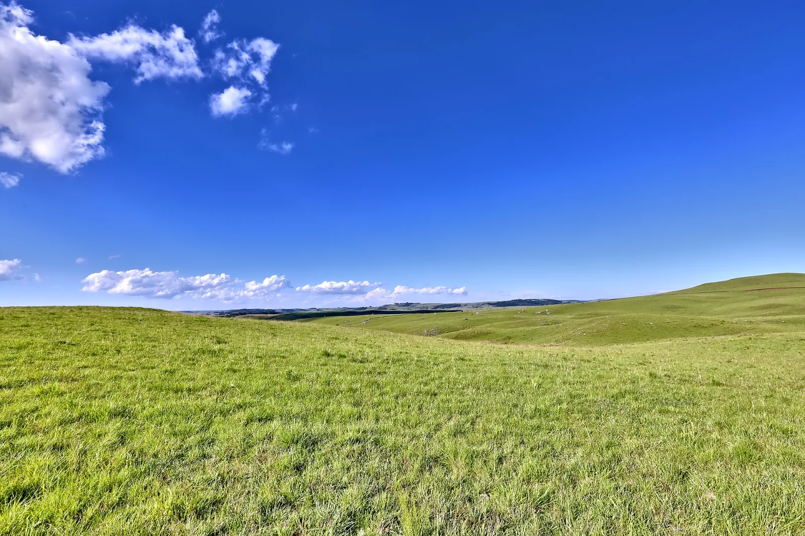
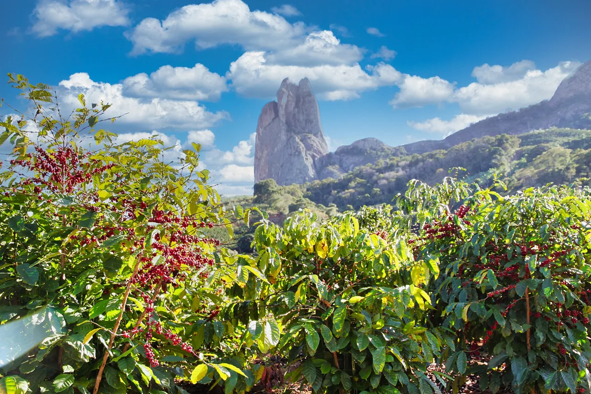
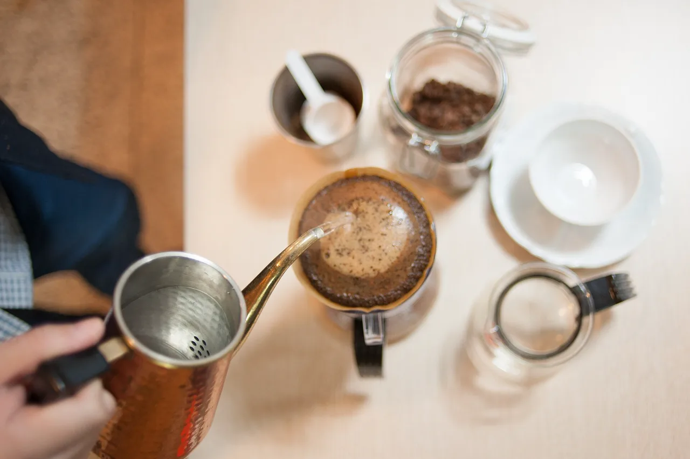

Aquecer
O grão perde umidade e começa a mudar. O calor entra aos poucos, com atenção ao ritmo de cada lote.

Cafés brasileiros, torrados em pequenos lotes na Serra Gaúcha. Para quem faz da xícara uma pausa.
Conheça os cafésA serra é a nossa casa de torra. O café chega de outras montanhas brasileiras, trazendo o sabor de onde nasceu.

Da montanha
para a montanha.
A gente escolhe a origem antes de acender o torrador. Depois, encontra o ponto em que cada café pode ser ele mesmo.

O grão perde umidade e começa a mudar. O calor entra aos poucos, com atenção ao ritmo de cada lote.
A cor muda, os aromas aparecem. Ajustamos energia e tempo para revelar doçura, sem esconder a origem.

Depois de resfriar, o café descansa. Na embalagem, a data de torra ajuda você a encontrar a melhor hora de preparar.
Três jeitos de chegar à sua pausa. Em grãos ou moído para o seu método, sempre em pacotes de 250 g.
Chocolate, castanha e caramelo.
Doce e encorpado. Para o primeiro café do dia, puro ou com leite.
R$ 38 / 250 g
Escolher EncostaMel, laranja e flores brancas.
Delicado e cítrico. Um coado para beber devagar e perceber mudar.
R$ 44 / 250 g
Escolher NeblinaFrutas amarelas, rapadura e cacau.
Vivo e suculento. Para quem gosta de descobrir outra camada na xícara.
R$ 48 / 250 g
Escolher CumeUm coado passado na hora, um pão de queijo quentinho e assunto sobre café. Nosso balcão é um convite para ficar.
Casa Torra Alta
São Francisco de Paula, Serra Gaúcha
Casa conceitual: endereço e horários fictícios, sem atendimento ao público.
O seu ritual não precisa esperar a próxima viagem.
Uma seleção de cafés, torrada na primeira terça do mês. Você escolhe quanto recebe e como prepara.